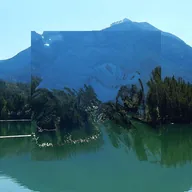

Deplasman Haritası

Katmanın renklerini, arkasındaki katmanları itmek için kullanır ve sonra kendini gizler; veya Harita Alt Katman olarak ayarlandığında bu katmanı altındaki katmanla iter.
Ayarlar
| Ayar | Tür | Aralık | Varsayılan |
|---|---|---|---|
| Kaydırma | Nokta (X, Y) | -5000 px – 5000 px | 0 px, 0 px |
| X | Seçim | R, G, B | R |
| Y | Seçim | R, G, B | G |
| Kenarlar | Seçim | Tekrarla, Yansıt, Temizle, Döşe | Yansıt |
| Merkezden | Açık veya kapalı | – | Kapalı |
| Ters çevir | Açık veya kapalı | – | Kapalı |
| Harita | Seçim | Bu katman, Alt katman | Bu katman |